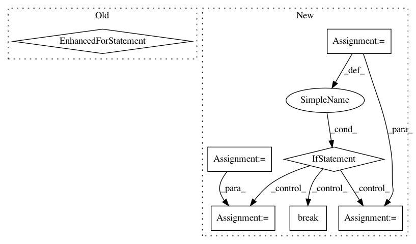

4396573e860d553825702006aa335989356b45c8,inaSpeechSegmenter/segmenter.py,Segmenter,batch_process,#Segmenter#,267
Before Change
def batch_process(self, linput, loutput, verbose=False):
fg = featGenerator(linput.copy())
for i, (mspec, loge, difflen) in enumerate(fg):
if verbose == True:
print(i, linput[i], loutput[i])
lseg = self.segment_feats(mspec, loge, difflen, 0)
seg2csv(lseg, loutput[i])
def seg2csv(lseg, fout=None):
df = pd.DataFrame.from_records(lseg, columns=["labels", "start", "stop"])
df.to_csv(fout, sep="\t", index=False)
After Change
def batch_process(self, linput, loutput, tmpdir=None, verbose=False, skipifexist=False, nbtry=1, trydelay=2.):
lmsg = []
fg = featGenerator(linput.copy(), loutput.copy(), tmpdir, self.ffmpeg, skipifexist, nbtry, trydelay)
for feats, msg in fg:
lmsg += msg
if feats is None:
break
mspec, loge, difflen = feats
//if verbose == True:
// print(i, linput[i], loutput[i])
b = time.time()
lseg = self.segment_feats(mspec, loge, difflen, 0)
seg2csv(lseg, loutput[len(lmsg) -1])
lmsg[-1] += " " + str(time.time() -b)
return lmsg
def seg2csv(lseg, fout=None):
df = pd.DataFrame.from_records(lseg, columns=["labels", "start", "stop"])
In pattern: SUPERPATTERN
Frequency: 3
Non-data size: 7
Instances
Project Name: ina-foss/inaSpeechSegmenter
Commit Name: 4396573e860d553825702006aa335989356b45c8
Time: 2020-05-10
Author: ddoukhan@ina.fr
File Name: inaSpeechSegmenter/segmenter.py
Class Name: Segmenter
Method Name: batch_process
Project Name: nilmtk/nilmtk
Commit Name: 41a57942968c89762733f0ffdb2b918b6be79c6b
Time: 2014-01-14
Author: jack-list@xlk.org.uk
File Name: nilmtk/dataset/hes.py
Class Name: HES
Method Name: load
Project Name: shibing624/pycorrector
Commit Name: 4e144c9f842d7415d8be5bdbb5912d88ae32cced
Time: 2018-04-16
Author: 507153809@qq.com
File Name: pycorrector/seq2seq/corpus_reader.py
Class Name: CGEDReader
Method Name: read_samples_by_string